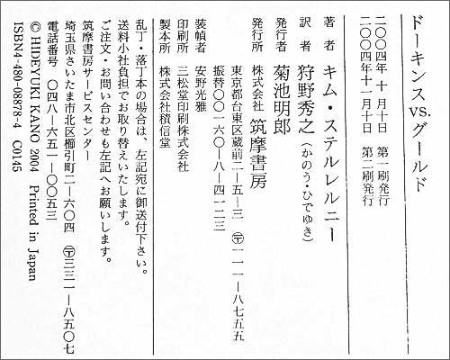
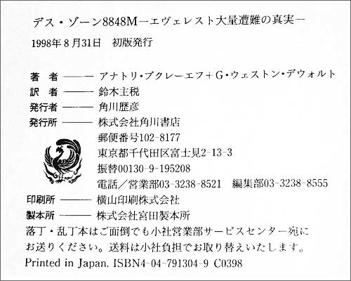
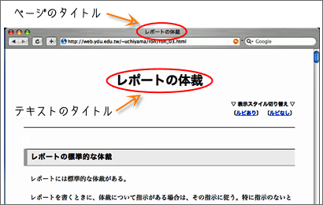
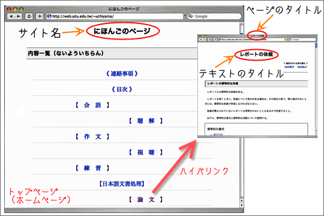

参考文献の書式
参考文献リストには、一定の書式がある。
ただし、参考文献の書式は、言語や専門分野によって違いがある。ここでは、文系論文での書式を紹介する。
以下に、参考文献書き方の具体例を示しておく。
書籍の場合の書き方
書籍の場合の一般的な書き方
- 泉井久之助（1981）『言語の構造』 紀伊国屋書店．
- 著者名・発行年・タイトル・出版社を書く
- 著者名はフルネームを姓-名の順で書く。姓と名の間を空ける必要はない。著者名では「泉井久之助著」のように「著」はつけない
- 発行年は、西暦で書いてカッコでくくる【→西暦・和暦・民国暦対照表】。月日は書かない【→発行年の見方】。発行年が複数年にわたるときは「（2000-2004）」のようにする
- 書籍名は二重カギカッコ（『』）でくくる
- 出版社は、奥付に「発行所」や「出版社」として記されているものを書く（「株式会社」などの部分は省略してよい。「株式会社筑摩書房」ではなく「筑摩書房」でよい）
- 出版社の所在地（地名）を書く必要はない（たとえば、「東京：紀伊国屋書店」ではなく「紀伊国屋書店」とする）
- 末尾に「.」（ピリオド）をおく

↑奥付の例（縦書き）

↑奥付の例（横書き）
副題がある場合の書き方
- 杉尾敏明・棚橋三代子（1992）『焼かれた「ちびくろサンボ」—人種差別と表現・教育の自由』青木書店.
- 久保正敏（1996）『マルチメディア時代の起点：イメージから見るメディア』日本放送出版協会.
- 赤間信幸（2006）『Microsoft Visual Studio 2005 によるWebアプリケーション構築技法—ASP.NET 2.0上での参照系・更新系アプリケーションの設計』日経BPソフトプレス.
- 佐久嶋ひろみ（2004）『SEO・アフィリエイト・RSS・ワンクリックアンケート・XOOPSで集客力・収益力・リピート力がアップするウェブサイトを創る：ウェブサイトが生まれ変わる注目のテクニックを紹介』メディア・テック出版.
- 副題（サブタイトル）がある場合は、タイトルに続けて書いた方がよい
- 題名（タイトル）と副題（サブタイトル）は「—」（ダッシュ）か「：」（コロン）で区切るようにするコンピュータの場合は、２バイトのスペースで区切ってもよい
- ２行以上になる場合、２行目以降は２文字程度下げて書く
シリーズ名などの書き方
- 村上征勝（2002）『文化を計る：文化計量学序説』（データの科学５）朝倉書店.
- 阿辻哲次（1994）『漢字の字源』（講談社現代新書1193） 講談社.
- 北杜夫（1976）『どくとるマンボウ航海記』（北杜夫全集11）新潮社.
- シリーズ名などはタイトルの後ろに書く
- 「○○文庫」や「○○新書」などの情報を記すときはタイトルの後に書く。なお、これらの情報は省略してもよい
- 全集などの巻数もタイトルの後ろに書く。なお、巻数などを書くときには、漢数字（一、二、三...）ではなくアラビア数字（１、２、３...）を使う
共著の場合の書き方
- 立花隆・利根川進（1993）『精神と物質』 文藝春秋．
- 共著（著者が二人以上）の場合は、著者名を「・」（ナカグロ）でつないで書く
- 著者名の順番は書籍に書かれている通りの順番にする
- 石原千秋・木股知史・小森陽一・島村輝・高橋修・高橋世織（1992）『読むための理論』世織書房.
- 石原千秋ほか（1992）『読むための理論』世織書房.
- 共著で著者が多い場合は、第一著者（先頭の著者名）だけを挙げて「〜ほか」と書いてもよい
- 「石原千秋・他」、「石原千秋（他）」、「石原千秋［他］」のように書いてもよい
翻訳書の場合の書き方
- キャンベル, ジョーゼフ（1997）『ジョーゼフ・キャンベルが言うには、愛ある結婚は冒険である。—ジョーゼフ・キャンベル対話集』馬場悠子訳, 築地書館．
- ガイヤー, ホルスト（1973）『馬鹿について』（満田久敏・泰井俊三訳） 創元社．
- ガイヤー, ホルスト（1973）『馬鹿について』（満田久敏ほか訳） 創元社．
- 翻訳書の場合も、著者名は姓名の順番で書く（「ジョーゼフ・キャンベル」でなく「キャンベル, ジョーゼフ」とする）
- 翻訳書の場合は訳者名も書くようにする。訳者名はカッコでくくるか、コンマ（,）で区切る
- 共訳（訳者が二人以上）の場合、訳者名の順番は書籍に書かれている通りの順番にする
- 共著と同じように、「〜ほか訳」や「〜・他訳」のように書いてもよい
編書の場合の書き方
- 大野晋編（2002）『対談 日本語を考える』中央公論新社.
- 木坂基先生退官記念論文集編集委員会編（1999）『日本語表現法論攷』溪水社.
- 江上波夫・大野晋編（1973）『古代日本語の謎』毎日新聞社.
- 日本経済新聞社・日経産業消費研究所編（2003）『知的財産戦略と地域再生—21世紀の知能都市をめざして—』日本経済新聞社.
- 江上波夫・ほか編（1973）『古代日本語の謎』毎日新聞社.
- 森地茂・篠原修編著（2003）『都市の未来—21世紀型都市の条件—』日本経済新聞社.
- 佐藤理史（1997）『アナロジーによる機械翻訳』（認知科学モノグラフ４）日本認知科学会編, 共立出版.
- シービオク,Ｔ.Ａ.（1985）『自然と文化の記号論』池上嘉彦編, 勁草書房.
- 二人以上の著者がいても、編者がいる場合は、編者名だけを「〜編」として示せばよい（著者名は不要）
- 編者が個人でない場合も書籍に書かれている通りに書けばよい
- 編者が著者でもある場合は「〜編著」と書く
- 編者が二人以上いる場合は、共著と同じように「・」でつないで書く（「〜ほか編」としてもよい）
- 編者がいても著者が一人の場合には著者名を示し、編者名はタイトルの後ろに書く
監修者などがいる場合の書き方
- 中山泰昌編著（1982）『新聞集成明治編年史』中山八郎監修, 本邦書籍.
- 日本版救急蘇生ガイドライン策定小委員会編著（2006）『救急蘇生法の指針 市民用・解説編』日本救急医療財団心肺蘇生法委員会監修, へるす出版.
- ヤコブソン, ロマーン（1973）『一般言語学』川本茂雄監修, 田村すず子・ほか訳, みすず書房.
- 著者、編者のほかに「監修者」がいる場合は、監修者名をタイトルの後ろに書く
- 区切りを明示するためには「,」（カンマ）を用いる
- 編者が個人でない場合も同じように監修者名を書く
- 翻訳書の場合は、監修者名と訳者名と区別して書く
- 山本常朝（1968）『葉隠』（江戸史料叢書）城島正祥校注, 人物往来社.
- 校注者がいる場合などもタイトルの後ろに書く
- 区切りを明示するためには「,」（カンマ）を用いる
論文の場合の書き方
論文の場合の一般的な書き方
- 久保光志（2000）「芸術における『規範』と『自己表現』—文体概念の歴史に即して—」, 山田忠彰・小田部胤久編『スタイルの詩学：倫理学と美学の交叉』pp.136-159, ナカニシヤ出版.
- 木坂基（1992）「日本語表現法—日本語表現法研究の構想」, 奥田邦男編『日本語教育学』（教職科学講座第25巻）pp.88-102, 福村出版.
- 中村明（1974）「文体の性格をめぐって」,『表現研究』20, p.1-11, 表現学会.
- 河西良治（2002）「多重境界線と意味」,『英語青年』148(3), pp.24-25, 研究社.
- 佐竹秀雄（2002）「変容する『書く暮らし』」,『日本語学』2002年11月号, pp.6-15, 明治書院.
- 著者名・発行年・タイトル・掲載書籍または掲載雑誌・掲載ページ数・出版社または発行者を書く
- 発行年は、西暦で書いてカッコでくくる。月日は書かない【→発行年の見方】
- 論文名はカギカッコ（「」）でくくる
- 書籍名や雑誌名は二重カギカッコ（『』）でくくる
- 論文名と書籍名・雑誌名の間は「,」（カンマ）で区切る
- 書籍の場合は、著者名か編者名をタイトルの前（または後ろ）に書く
- 雑誌の場合は、号数を書く。「第20号」ならば「20」、「第148巻３号」ならば「148(3)」のように書く
- 商用雑誌の場合は「2002年11月号」のように書いてもよい
- 掲載ページ数は「pp.20-56」または「p.8-14」のように書く
- 出版社の所在地（地名）を書く必要はない（たとえば、「東京：紀伊国屋書店」ではなく「紀伊国屋書店」とする）
- 大学や学会が発行した雑誌（非商用誌）の場合は、発行者（大学や学会の名前）を書く
- 末尾に「.」（ピリオド）をおく
翻訳論文の場合の書き方
- フーコー, ミシェル（1990）「作者とは何か？」清水徹・豊崎光一訳,『作者とは何か』（ミシェル・フーコー文学論集１）, pp.9-72, 哲学書房.
- バルト, ロラン（1979）「文体とそのイメージ」沢崎浩平訳,『現代思想』7(4), pp.106-113, 青土社.
- 翻訳論文の場合も、著者名は『姓名』の順番で書く（「ミシェル・フーコー」でなく「フーコー, ミシェル」とする）
- 論文名の後ろに翻訳者名を書く
- その他は、一般的な書き方と同じ
新聞記事の場合の書き方
新聞記事の場合の一般的な書き方
- 朝日新聞「社説」1998年12月23日付朝刊, 12A(2).
- 日本経済新聞「外国人活用を人材各社支援」2005年10月19日付朝刊, 14(7).
- 新聞名・記事名（または欄の名前）・年月日・朝刊夕刊などの別、版、面を書く
- 14版の７面ならば「14(7)」と書く
- 記事名はカギカッコ（「」）でくくる
著者名が記されている場合の書き方
- 郡千寿子（2006）「ことばの不思議—語彙多い日本語」,『新潟日報』2006年８月28日付朝刊, 10(18).
- 著者名・発行年・記事名・新聞名・年月日・朝刊夕刊などの別・版、面を書く
- 10版の18面ならば「10(18)」と書く
- 記事名はカギカッコ（「」）でくくる
- 新聞名は二重カギカッコ（『』）でくくる
雑誌記事の場合の書き方
雑誌記事の場合の一般的な書き方
- 武智幸徳（2006）「ないものはつくる」,『週刊サッカーマガジン』2006年９月５日号, p.29, ベースボールマガジン社.
- 著者名・発行年・記事名・雑誌名・号数・出帆社を書く
- 記事名はカギカッコ（「」）でくくる
- 雑誌名は二重カギカッコ（「」）でくくる
- 号数は、月刊誌の場合「2006年９月号」、週刊誌の場合「2006年９月５日号」のように書く
- １ページだけの記事の場合、ページ数は「p.29」のように書く（「pp.」とはしない）
著者名が記されていない場合の書き方
- 「アルビレックス新潟：決めるべき男、目覚める」,『週刊サッカーマガジン』2006年９月５日号, p.54, ベースボールマガジン社.
- 著者名が記されていない記事は、記事名からはじめる
- その他は、一般的な書き方と同じ
電子文書の場合の書き方
ウェブページの場合の一般的な書き方
- 指宿信（2000）「ネット文献の引用方法について—学術資源としてのネットの可能性—」, <http://www.ne.jp/asahi/coffee/house/ARG/compass-028.html> 2004年５月７日アクセス.
- 馬場肇（2003）「Googleの秘密—PageRank徹底解説」, [online]www.kusastro.kyoto-u.ac.jp/~baba/wais/pagerank.html（参照2004-8-4）.
- 著者名・発行年・タイトル・URL・アクセス年月日を書く
- 参照するテキストの最終更新日を発行年とするサイトやページの最終更新日ではない）
- タイトルは、サイト名やページタイトルではなく、テキスト（文章）のタイトルを書く
- タイトルはカギカッコ（「」）でくくる
- URLはアングルブラケット（< >）でくくるか、「[online]」と書いた後に示す
- アクセス年月日は、「2004年５月７日アクセス」や「（参照2004-8-4）」のように書く

参考文献では、ページのタイトルではなくテキストのタイトルを示すようにする。
ウェブページで情報が不足している場合の書き方
- 「今後の社会資本政策に関するインターネット・アンケート調査」, <http://sociosys.mri.co.jp/enquete/031215.html> 2005年５月９日アクセス.
- 内山和也（発行年不明）「日本人の依頼行為における順序構造について」, [online]homepage3.nifty.com/recipe_okiba/nifongo/irai.html（参照2007-1-1）.
- "はじめてのウェブログ [weblog for beginners]", <http://kotonoha.main.jp/weblog/> 2006年６月29日アクセス.
- 著者名が不明または匿名の場合はタイトルから書く（発行年は省略してよい。発行年を省略しないときは「著者不明」とする）
- 著者名はわかるが、発行年がわからない場合には、「（発行年不明）」と書く
- テキストのタイトルが不明の場合は、サイト名またはページのタイトルを書く
- サイト名やページのタイトルを書く場合は、ダブルクォーテーション（" "）でくくる

多くのサイトでサイト名は、トップページ（ホームページ）の最も目立つところに示されている。
PDFなどの場合の書き方
- 山下清美・川浦康至・川上善郎（2000）「WEB日記の内容と文体の特徴」（CmCC研究会第3回シンポジウム発表資料）, [online]kujira.psy.senshu-u.ac.jp/~Eyamasita/works/CmCC3.pdf（参照2003-１-３）.
- 太宰治（2000）「グッド・バイ」<http://www.aozora.gr.jp/cards/000035/files/258.ebk> 2002年４月９日アクセス.
- 書籍や論文の場合と同じように書く
- テキストに発行年が記されている場合は、それに従う
- 発行年が記されていない場合は、ファイルの最終修正日を発行年としてよい
- タイトルはカギカッコ（「」）でくくる
- 入手先のURLを書く
辞書の場合の書き方
- 丸山圭三郎編（1985）『ソシュール小事典』 大修館書店．
- 松村明編（1995）『大辞林』第二版, 三省堂.
- 書籍の場合と同じように書く
- 「第二版」などと書かれているときは、タイトルの後ろに書く
参考文献リストの書式
レポートを書くときに参考にしたり引用した文献・資料はすべて参考文献リストに書かなければならない。【→参考文献リスト】
- リストでは著者名のアイウエオ順に並べる
- 書籍や論文などを区別する必要はない（すべての参考文献をアイウエオ順に並べる）
- 著者名のないものは最後にする
- 同じ著者名が続くときは、２回目以降の著者名を省略して「———」と書いてよい
- 同じ著者名の参考文献が複数あるときは、年代順に並べる
- 同じ著者名の参考文献で発行年も同じときは、「1979a」、「1979b」、「1979c」のように区別する（順番は書籍を先にすることが多い）
参考文献リストは、次のように書けばよいだろう。
参考文献
- 赤間信幸（2006）『Microsoft Visual Studio 2005 によるWebアプリケーション構築技法—ASP.NET 2.0上での参照系・更新系アプリケーションの設計』日経BPソフトプレス.
- 石原千秋ほか（1992）『読むための理論』世織書房.
- 泉井久之助（1981）『言語の構造』 紀伊国屋書店．
- 内山和也（発行年不明）「日本人の依頼行為における順序構造について」, [online]homepage3.nifty.com/recipe_okiba/nifongo/irai.html（参照2007-1-1）.
- ガイヤー, ホルスト（1973）『馬鹿について』（満田久敏・泰井俊三訳） 創元社．
- キャンベル, ジョーゼフ（1997）『ジョーゼフ・キャンベルが言うには、愛ある結婚は冒険である。—ジョーゼフ・キャンベル対話集』（馬場悠子訳）築地書館．
- シービオク,Ｔ.Ａ.（1985）『自然と文化の記号論』池上嘉彦編, 勁草書房.
- 日本経済新聞「外国人活用を人材各社支援」2005年10月19日付朝刊, 14(7).
- 日本版救急蘇生ガイドライン策定小委員会編著（2006）『救急蘇生法の指針 市民用・解説編』日本救急医療財団心肺蘇生法委員会監修, へるす出版.
- バルト, ロラン（1971）「記号学の原理」沢村昂一訳,『零度のエクリチュール』, pp.85-206, みすず書房.
- ———（1979a）『旧修辞学便覧』沢崎浩平訳, みすず書房.
- ———（1979b）「物語の構造分析序説」花輪光訳,『物語の構造分析』pp.1-54, みすず書房.
- ———（1979c）「文体とそのイメージ」沢崎浩平訳,『現代思想』7(4), pp.106-113, 青土社.
- ヤコブソン, ロマーン（1973）『一般言語学』川本茂雄監修, 田村すず子・ほか訳, みすず書房.
- 山本常朝（1968）『葉隠』（江戸史料叢書）城島正祥校注, 人物往来社.
- 「アルビレックス新潟：決めるべき男、目覚める」,『週刊サッカーマガジン』2006年９月５日号, p.54, ベースボールマガジン社.
- 「今後の社会資本政策に関するインターネット・アンケート調査」, <http://sociosys.mri.co.jp/enquete/031215.html> 2005年５月９日アクセス.
- "はじめてのウェブログ [weblog for beginners]", <http://kotonoha.main.jp/weblog/> 2006年６月29日アクセス.
なお、参考文献リストの書式についてさらに詳しいことは【→参考文献リスト】を参照せよ。